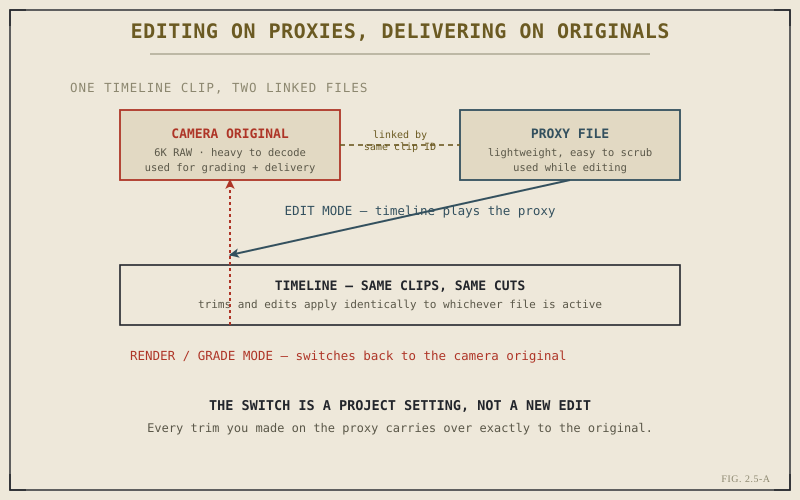

At some point, on some project, you'll drop a clip onto the timeline and playback will stutter, drop frames, or refuse to scrub smoothly at all — not because anything is broken, but because the footage itself is more demanding to decode in real time than your hardware can keep up with. High-resolution RAW, heavily compressed long-GOP formats, and multi-layer timelines are all common culprits. Resolve's answer to this is proxies and optimized media, and understanding the difference between the two, and when to reach for which, will save you real editing time on exactly the projects where time matters most.
The Problem: Editing Requires Speed, Not Just Quality
Camera manufacturers optimize their recording formats for image quality and storage efficiency, not for how easy the resulting file is to scrub backward and forward in real time. A heavily compressed 6K or 8K file might look fantastic and take up relatively little disk space, but decoding it fast enough for smooth, responsive playback — especially when you're jumping around unpredictably, the way editing actually works — can demand more processing power than even a capable editing machine comfortably provides, particularly with several such clips stacked on a timeline at once.
This creates a real tension: you don't want to throw away image quality, because Part IX's grading work and final delivery both depend on having the full-quality original available. But you also don't want every trim and every playback attempt fighting your computer's decode speed during the entire editing process. Proxies and optimized media both solve this the same basic way — by giving you a lighter, easier-to-decode stand-in to actually work with, while keeping the original safely available for everything downstream.
Proxies: Lightweight Copies, Externally Managed
A proxy is a separate, lower-resolution or more easily decoded version of a source clip, linked to the original by Resolve so that editing one effectively edits both. You generate proxies from within Resolve, and the software handles creating the linked stand-in files and keeping track of the relationship — but the resulting proxy files themselves are just video files sitting wherever you told Resolve to put them, and if you ever move a project between systems, those proxy files need to travel with it (or be regenerated) just like any other media.

Every trim and cut applies identically whether the timeline is currently playing the proxy or the original.
You're never really editing "the proxy" as a separate task from editing "the real footage." You're editing one timeline, and simply choosing which linked file — light or heavy — Resolve plays back while you work.
The switch between playing proxies and playing camera originals is a single project-level setting, not something you manage clip by clip, and not something that requires redoing any editing work. Every trim, every cut point, every edit you made while working against the proxy applies identically once you switch back to the original — because, as Chapter 1.1 established, the timeline was only ever storing instructions referencing a clip, and which physical file currently answers to that reference is a separate question entirely.
Optimized Media: Resolve's Own Intermediate Files
Optimized media solves a closely related but distinct problem, and it's worth not conflating the two. Rather than a separate proxy file you might hand off or manage externally, optimized media is an intermediate file Resolve generates and manages entirely internally — typically used for formats that are especially demanding to decode, like certain RAW or highly compressed camera formats, converting them into an easier-to-play intermediate codec purely for the duration of editing. You don't typically interact with optimized media files directly the way you might with proxies; Resolve creates them, uses them transparently during playback, and you toggle between "use optimized media" and "use original media" much the same way you'd toggle proxies.
In practice, many editors default to optimized media specifically for stubborn RAW formats where playback performance is the primary concern and there's no need to hand a lightweight file to anyone outside the edit, and reach for proxies specifically when there's a reason to manage the lightweight files more deliberately — sending them to a remote collaborator with limited bandwidth, for instance, or working on a laptop away from the original media entirely.
A Practical Workflow, Not a Permanent Choice
Neither proxies nor optimized media are all-or-nothing, project-long commitments. A common, sensible pattern: generate proxies or optimized media immediately after import, so from the very start of editing, playback stays smooth regardless of the original format's weight. Edit the entire rough cut and refine it this way. Only switch to full-resolution originals when you actually need them — heading into Part IX's color grading work, where judging fine image detail matters, and again on the Deliver page in Part XI, where final renders must always draw from the original, full-quality files rather than a proxy standing in for it.
This chapter closes out the "getting footage ready to work with" thread that's run through Part II so far. Chapter 2.6 shifts from workflow to a bit of underlying technical grounding — what the codec and format terms you'll keep encountering actually mean for an editor, so that decisions like "should I proxy this footage" stop being guesswork and start being informed by what the format in front of you actually demands.
Key Concepts to Remember
- Proxies and optimized media both exist to trade decode weight for editing speed, without ever discarding the original, full-quality footage.
- Proxies are separate, externally manageable files; optimized media is an internal Resolve-managed intermediate — pick based on whether you need to manage the lightweight files yourself.
- Switching between light and full-resolution playback is a project setting, not a re-edit — every trim carries over exactly.
- A common workflow edits entirely on proxies or optimized media, switching to full-resolution originals only for grading and final delivery.
Cross-References Forward
| → Ch. 2.6 | Explains the codec and format concepts that determine whether footage actually needs a proxy in the first place. |
| → Pt. XIII | Performance & System Optimization — revisits proxies and cache as part of a full performance strategy. (Not yet published.) |
| → Pt. XI | The Deliver Page — where final renders always draw from full-resolution originals, never proxies. (Not yet published.) |